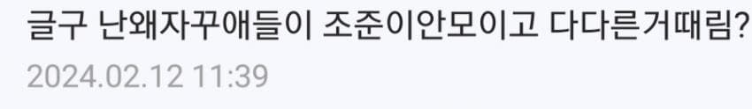
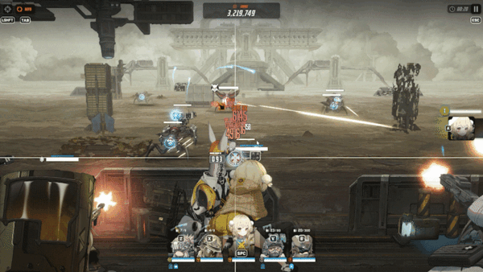
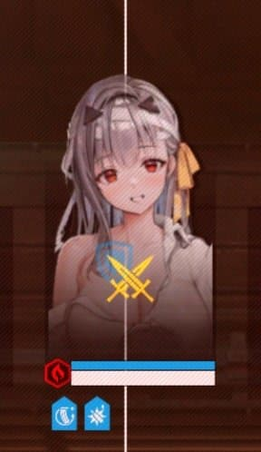
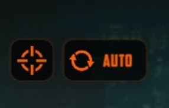
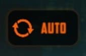
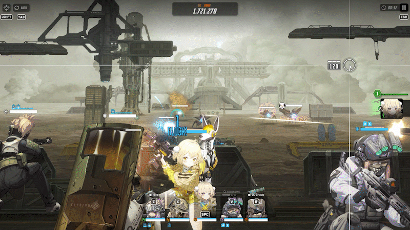
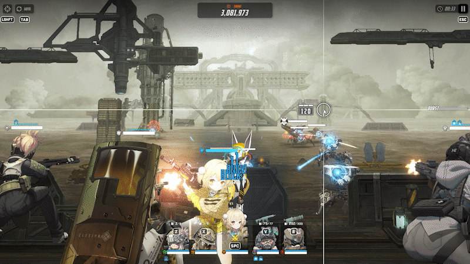
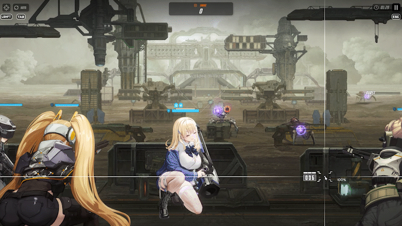
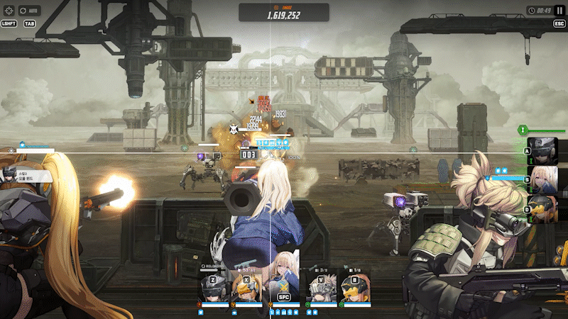
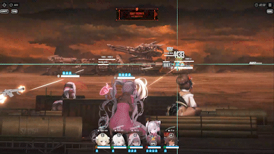

나도 이제 막 증폭 열어서 부족한 부분 있을 수 있음.정보 중에 틀리거나 보완할 내용 있음 댓 ㄱㄱ
며칠 전 갤질하는데 이런 질문글 봐서 나도 뉴비 때 생각이 났음.

전투에 관한 정보 모아서 한번 글 쓰면 좋을 것 같다는 생각에 함 싸봄. 짤 용량 제한으로 편수 나눠서 씀.
모든 내용운 PC 기준으로 작성함.
다룰 내용은 다음과 같다.
1. 니케의 기본적인 전투 시스템.....(1편)
2. 두 가지 오토 버튼의 기능............(1편)
3. 엄폐 (전체/개인)................................(1편)
4. 버스트 수급과 톡톡이.....................(이후 2편)
5. 전투력 보정
6. 우월코드
7. 코어 데미지
8. 명중률과 거리별 데미지 and 관통
9. 파츠/저지부위
10. 머신건 예열
1. 니케의 기본적인 전투 시스템
1) 일반적인 상황
- 니케는 최대 5인투입 가능하며 Z, X, C, V, B로 선택한 1명을 제외하고 나머지 4명은 기본적으로 지 좆대로 때리는 세미오토겜.풀 오토로 돌릴 수 있으나 후술함.
- 전투 투입시 기본적으로 3번 (c)에 카메라가 위치한다. 해당 니케는 마우스로 직접 조준이 가능하다. 나머지 4명은 랩처가 보인다하면 그냥 지맘대로 쏴버림.
- Z, X, C, V, B로 카메라 이동가능하며 자동조준 기능이 꺼져있다는 가정하에 선택된 니케는 무지성 공격을 멈추고 즉시 엄폐/재장전에 들어간다.
- 당연히 선택된 니케를 제외한 4명은 무지성으로 공격한다.
2) 풀버스트 상황

- 풀버스트때는 무지성 사격을 멈추고 5명이 단합하여 점사가 가능하다.
- 별다른 조작(클릭)을 하지 않을 경우 자동적으로 랩처를 추적하여 점사한다.
3) 체력 게이지 구분

- 전투 진입시 니케 하단에 두가지 게이지가 존재한다.상단 파란색이 엄폐물 체력이고, 하단 하얀색이 니케 HP다.
- 엄폐물 체력도 특정 니케의 스킬로 회복 가능하다.
- 엄폐물 체력 전부 소진시 죽진 않지만, 엄폐를 하여도 엄폐 효과를 볼 수 없으며 특정 니케 스킬(엄폐물 부활)이 없다면 엄폐물 체력은 다시 생기지 않는다.
2. 두 가지 오토 버튼의 기능

- 니케에는 좌 상단 두가지 버튼이 존재함.
1) 버스트 오토 버튼

- 얘는 버스트 스킬을 자동으로 사용하게 해주는 거다.1버 - 2버 - 3버 순 사용은 당연한거고,각버스트의 니케가 여러명 있으면 좌측에 편성된 니케의 버스트부터 사용된다.
- 버스트는 수동으로 사용할때 더 빠르게 사용 가능하다.

- 이게 수동 버스트 사용이고

- 이게 자동 버스트 사용이다.
- 별 차이 없어 보이지만 고난도 맵에선 촌각을 다투기에, 손에 익었다면수동이 용이하다.
- 또한 자동의 경우 버스트 게이지가 차는 족족사용해버려서 버스트 타이밍을 유동적으로 잡기 힘들다.
- 버스트를 자주 사용하는 니케를 좌측에 배치하여 AAA, AAD입력으로 편하게 수동으로 버스트를 킬 수 있다.
2) 자동 조준 버튼
- 얘는 앞서 말한 선택된 1명의 니케의 조준마저자동으로 하게 한다.
- 이걸 키면 완전한 오토 조준으로, 5명의 니케 모두가 무지성 사격을 하게된다.
- 따라서 두 오토 버튼을 모두 켰을 때 니케는 풀오토겜이 된다.
- 쉬운 맵은 이거 켜두고 코파면서 클리어 가능하다.
- 특정 컨트롤을 요하는 니케/맵의 경우 이 기능이 활성화 되어 있으면 방해되기에 끈다. (후술)
3. 엄폐(전체/개인)
- 하나 알고 가야할 것은, 엄폐물 체력이 있다는 가정하에 재장전 = 엄폐이다.
- 쉽게 생각해서 사격 이외의 재장전/대기 모션 모두 엄폐한 것으로 간주함.
1) 전체엄폐

- 스페이스바를 누르면 모든 니케가 사격을 중지하고 즉시 재장전/대기에 들어간다. 이 상태에서 피격시파란색으로 피격 데미지가 뜨며 엄폐물 체력이 소모된다.
- 전체 엄폐 상태에서 선택한 니케 1명은 자유롭게 공격 가능하다.
- 가끔 손꼬여서 본인은 풀버때 폭딜을 넣고 있다고 생각하고 있으나 실제로는 윗짤처럼 혼자 딜하고 있는 경우가 있다. 수시로 확인하는 습관을 기르자.
2) 개인엄폐
- 전체엄폐의 장점이라면 조작하기 쉽다는 것과, 광역기에 대항 할 수 있다는 것이다.
- 그러나 모든 니케가 숨어 버리기 때문에 딜로스가 생긴다.
- 이를 해결하기 위해 개인엄폐가 존재한다.
- 개인엄폐는 자동조준 버튼(L-Shift)을 끄고 해야한다.

- 일부 도발이 달려 있는 니케가 있다면, 개인엄폐의 가치는 더더욱 증가한다.
- 짤처럼 도발 켜진 티아가 혼자 딜을 받아내며, 나머지 4명의 니케는 딜을 넣는 것이 가능하다.

- 굳이 도발 니케가 아니더라도, 윗 짤처럼 1인을 대상으로 하는 적의 공격에 개인 엄폐로 대항할 수 있다.
- 윗짤은 갤에서 태보라고 불리는기술인데, 이것에 관해선 다른 정보글이 있으니 관심있으면 찾아보는거 추천.
짤 용량 제한으로 2편에서 계속함
2편 :
https://gall.dcinside.com/mgallery/board/view/?id=gov&no=1112809&page=1